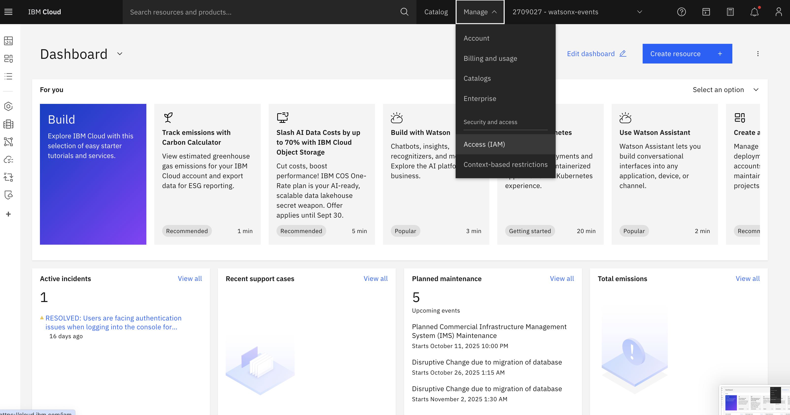
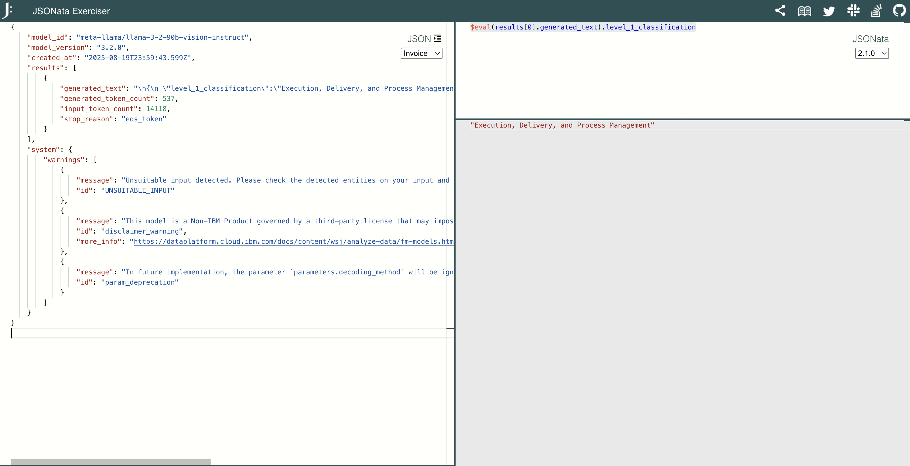

Lab 1.2: Integrate the model in OpenPages
1. Access the Custom Machine Learning Models Configuration
- Log in to OpenPages as an admin (with required permissions).
-
From the Administration menu, go to Integrations → Custom Machine Learning Models.

-
Click New Model to begin configuring a new integration.

2. Configure Model Access / Connection
On the “New Model” screen:
- Enter Name and Label (e.g.
risk_classification) - Select the AI Service Type (e.g. Watson Machine Learning on IBM Cloud)
- Enter Access Parameters such as:
- Watson service type:
Watson Machine Learning on Cloud - Authentication URL:
https://iam.cloud.ibm.com/identity/token - API Key: Retrieve from IBM Cloud
- Base Deployment URL:
https://us-south.ml.cloud.ibm.com/ml/v4 - Deployment ID: Retrieve from deployment space on watsonx.ai
- Space ID: Retrieve from model/prompt template deployment on watsonx.ai
- API version:
2021-05-01 - Click Test Connection to verify connectivity

Generating your watsonx API key for OpenPages: - Go to ibm - Via the tool bar, go to Manage > Acces (IAM) 
-
Create a new API Key that will be used for inferencing from OpenPages

-
Copy the new API Key to enter into the "New Model" sceen. Make sure you keep this key a secret.
After entering valid details, click Next to proceed.
3. Map the Inputs (Model → OpenPages fields)
On the Map Inputs page:
-
Choose the Object Type (Risk) to which this model applies.
-
Decide whether input is Manual or Automatic mapping.
-
Add one row per input your model expects:
- Model input field (must match the name used by your deployed model, e.g.
risk_description) - Select the corresponding OpenPages field (e.g.
Description) -
Mark whether the input is Required

-
Click Next to move to output mapping.
(If “Next” is disabled, check that at least one input row is defined.)
4. Map the Outputs and JSONata Extraction
On the Map Outputs page:
-
Select the Insight type, e.g.
Set fields(because you want the model to populate the Level 1 / Level 2 fields)

-
Choose whether each output is Single insight or List of insights (for your taxonomy, Single is typical) :contentReference[oaicite:3]{index=3}
- For each output you want (e.g. Level 1 classification, Level 2 classification):
- Output label (e.g.
PrimaryClassification,SecondaryClassification) -
JSONata expression to extract the value from the model’s JSON response
- Example: if model’s JSON is:
{ "level_1_classification": "Clients Products and Business Practices", "level_2_classification": "Product Flaws" }then JSONata expressions might be: level_1_classificationlevel_2_classification- If the response is wrapped (e.g. under
results.generated_text), you may needresults.generated_text.level_1_classification
- Example: if model’s JSON is:
-
(If Insight type = Set fields) Target field: map the output to your OpenPages enumerated field
-
Optionally set Confidence score or Minimum confidence thresholds if your scenario requires filtering suggestions.
- (If using
Set fields) choose whether suggestions are User set or Automatically set. - Click Next to proceed to guidance configuration.
5. Configure User Guidance and Display
On the Guidance page:
- Enter a Description explaining what the model does (e.g. “This model classifies text into risk taxonomy”)
- Optionally set Notification Messages or Style / display options for how users see the model’s suggestion.
- Optional: you can embed JSONata-based conditions for alerts.
- Click Save to complete model setup.
The model should now appear in the Custom Machine Learning Models table with status “Complete”.